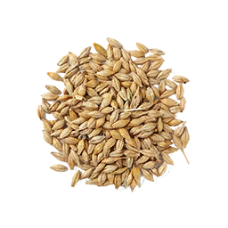

Le principe même de notre système est de créer une famille de « micro-agriculteurs » et de partager l’envie de cultiver. De nos jours le plus difficile pour commencer une activité est trouver les bonnes inspirations, les bons fournisseurs mais surtout les bons conseils. Ici nous encourageons le partage, et pour le prix d’un petit sachet de graines vous aurez accès illimité à notre réseau de graines non OGM.
Les graines

Les semences sont la base de toute idée, famille, plante… Afin de pouvoir faciliter la fin de la famine, le partage intra-sociétaire et mettre notre grain dans la lutte contre la pollution.
Raspberry Pi

Si vous préférez aider votre famille de micro-agriculteurs et montrer la fiabilité de vos graines, nous vous suggérons le plan PiMium. Grâce à celui-ci, vous et les autres internautes pouvez regarder la température et l’humidité de la pièce où se trouvent vos graines. Tout ce que vous avez à faire lors de la réception de l’appareil est de le brancher sur le secteur et au modem internet fourni. Le RaspBerry Pi est une invention magnifique qui permet de partager des informations, en fonction des capteurs connectés dessus.